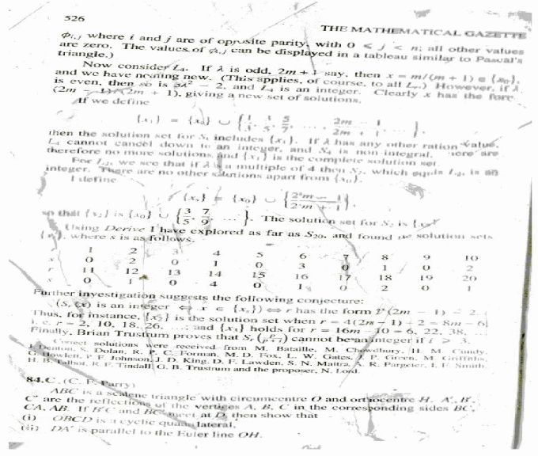
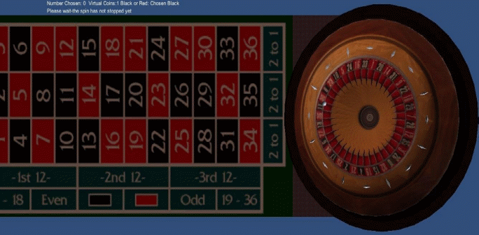
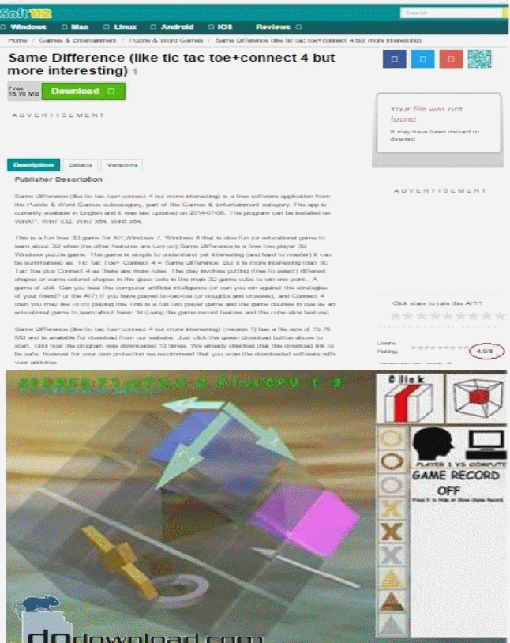

Below you will find out more about my work in maths and software- its in no specific order. Site under construction- but mostly finished.
In 2000, I solved problem 84. B in the Vol 84 of the Math. Gaz. journal- see a scan of the (rather old) page is given below. This was not a paper but a solution to a problem- the problem was posed by the journal. See my name above the line that starts with "J. Denton". I dont have the other pages for that solution- but the Math. Gaz. was reasonably priced last time I read it back in 2002. Also it wasnt that easy to solve problem 84.B

I have various open source software works. These includes tutorial such as how to get started in Unity. I like to spend some of my free time to make tutorials to show, in an easy way, how to create software which some people may consider hard to do; I have thousands of downloads in totals to my tutorials and other software. My most downloaded project there, which is not a tutorial, is open source roulette in Unity 3D which has had over 3000 downloads in over 100 countries. The downloads continue to this very day. The roulette game's source code, which you can download, is done in Javascript.

I wrote this new 3D windows game- Same Difference- it approx 11000 lines of code. The image, given below, of my game is taken from the dodownload.com site- the submissions there are manually checked, and if the editor there likes your submission you get an email back saying it been uploaded to dodownload.com. On a different site it, soft 112, recevied 4 out of 5 starts (that rating in circled in red in the image below) . I like to write and play all sorts of video games.
